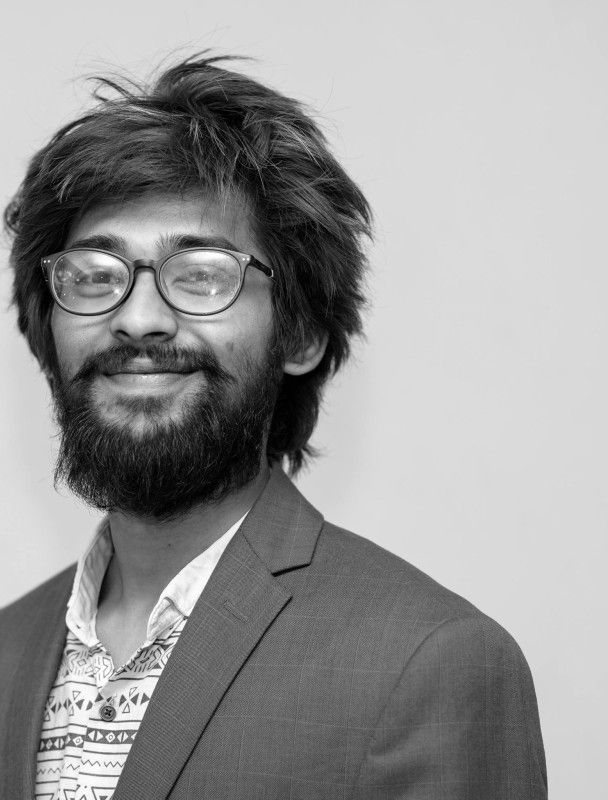

<title>Pranoy M S Portfolio</title>
<meta name="claude:viewport-fit-sides" content="cover">
<meta name="description" content="Pranoy M S builds computer vision and AI systems for infrastructure, diagnostics and medicine. Founder, engineer, former venture investor.">
<link rel="preconnect" href="https://fonts.googleapis.com">
<link rel="preconnect" href="https://fonts.gstatic.com" crossorigin>
<link href="https://fonts.googleapis.com/css2?family=Bricolage+Grotesque:opsz,wght@12..96,300..800&family=Hanken+Grotesk:wght@400;500;600&family=JetBrains+Mono:wght@400;500&display=swap" rel="stylesheet">
<style>
/* Layout: one calm column system. Boldness lives in the hero portrait, where detection boxes label the person the way his own models label a road or a culture plate.
   The same five class colours then tag every project by domain, so the colour means something all the way down. */
:root{
  --bg:#EDF1EF; --panel:#F7F9F8; --fg:#0E1A1C; --muted:#566665; --line:#CAD3D0; --accent:#D9480F;
  --c-vision:#D9480F; --c-bio:#0B7A69; --c-audio:#6741D9; --c-product:#1C64F2; --c-material:#4C7A12; --on-c:#fff;
  --scrim:rgba(8,16,18,.62);
  --font-display:"Bricolage Grotesque","Helvetica Neue",Arial,sans-serif;
  --font-body:"Hanken Grotesk","Helvetica Neue",Arial,sans-serif;
  --font-mono:"JetBrains Mono",ui-monospace,Menlo,Consolas,monospace;
  --gutter:max(16px,env(safe-area-inset-left,0px));
  color-scheme:light;
}
@media (prefers-color-scheme:dark){:root:not([data-theme="light"]){
  --bg:#0B1214; --panel:#121C1F; --fg:#E7EEEC; --muted:#93A5A3; --line:#26373A; --accent:#FF8A4C;
  --c-vision:#FF8A4C; --c-bio:#3DDBC0; --c-audio:#A99BFF; --c-product:#6EA8FF; --c-material:#A5D65A; --on-c:#0B1214;
  --scrim:rgba(4,9,10,.7); color-scheme:dark}}
:root[data-theme="dark"]{
  --bg:#0B1214; --panel:#121C1F; --fg:#E7EEEC; --muted:#93A5A3; --line:#26373A; --accent:#FF8A4C;
  --c-vision:#FF8A4C; --c-bio:#3DDBC0; --c-audio:#A99BFF; --c-product:#6EA8FF; --c-material:#A5D65A; --on-c:#0B1214;
  --scrim:rgba(4,9,10,.7); color-scheme:dark}

*{box-sizing:border-box}
html{scroll-behavior:smooth;scroll-padding-top:84px}
body{margin:0;background:var(--bg);color:var(--fg);font-family:var(--font-body);font-size:17px;line-height:1.6;-webkit-font-smoothing:antialiased}
body::before{content:"";position:fixed;inset:0 0 auto;height:env(safe-area-inset-top,0px);z-index:60;background:var(--bg)}
a{color:inherit}
img{max-width:100%;display:block}
button{font:inherit;color:inherit}
:focus-visible{outline:2px solid var(--accent);outline-offset:3px;border-radius:2px}
.wrap{max-width:1240px;margin:0 auto;padding-left:max(20px,env(safe-area-inset-left,0px));padding-right:max(20px,env(safe-area-inset-right,0px))}
.mono{font-family:var(--font-mono)}
h1,h2,h3,h4{font-family:var(--font-display);text-wrap:balance;margin:0}

/* class colour mapping */
[data-g="vision"]{--c:var(--c-vision)}[data-g="bio"]{--c:var(--c-bio)}[data-g="audio"]{--c:var(--c-audio)}
[data-g="product"]{--c:var(--c-product)}[data-g="material"]{--c:var(--c-material)}
.tag{display:inline-flex;align-items:center;gap:8px;font:500 12px/1 var(--font-mono);color:var(--fg);letter-spacing:.02em}
.tag::before{content:"";width:10px;height:10px;border:2px solid var(--c);flex:none}

/* header */
.top{position:sticky;top:env(safe-area-inset-top,0px);z-index:50;background:color-mix(in srgb,var(--bg) 88%,transparent);backdrop-filter:blur(14px);border-bottom:1px solid var(--line)}
.top .wrap{display:flex;align-items:center;justify-content:space-between;height:64px;gap:16px}
.mark{display:flex;align-items:center;gap:10px;text-decoration:none;font:700 18px var(--font-display);letter-spacing:-.02em;white-space:nowrap}
.mark i{width:20px;height:20px;position:relative;display:block}
.mark i::before,.mark i::after{content:"";position:absolute;width:9px;height:9px;border:2px solid var(--accent)}
.mark i::before{left:0;top:0;border-right:0;border-bottom:0}.mark i::after{right:0;bottom:0;border-left:0;border-top:0}
.nav{display:flex;align-items:center;gap:6px}
.nav a,.icon-btn{font:500 14px var(--font-body);text-decoration:none;color:var(--muted);padding:8px 12px;border-radius:6px;transition:color .15s,background .15s}
.nav a:hover,.icon-btn:hover{color:var(--fg);background:color-mix(in srgb,var(--fg) 7%,transparent)}
.icon-btn{border:1px solid var(--line);background:transparent;cursor:pointer;display:grid;place-items:center;width:38px;height:38px;padding:0;margin-left:6px}
.icon-btn svg{width:18px;height:18px;stroke:currentColor;fill:none;stroke-width:1.8}

/* hero */
.hero{display:grid;grid-template-columns:minmax(0,1.25fr) minmax(0,.85fr);gap:clamp(28px,5vw,80px);align-items:center;padding-block:clamp(36px,6vw,84px)}
.hero h1{font-size:clamp(54px,9.4vw,132px);font-weight:800;line-height:.9;letter-spacing:-.045em;font-variation-settings:"opsz" 96}
.lede{font:500 clamp(22px,2.6vw,32px)/1.25 var(--font-display);letter-spacing:-.02em;margin:28px 0 0;max-width:22em;text-wrap:balance}
.hero p.desc{color:var(--muted);max-width:34em;margin:18px 0 0}
.now{display:flex;align-items:center;gap:10px;margin-top:26px;font:500 13px var(--font-mono);color:var(--muted)}
.now b{color:var(--fg);font-weight:500}
.now span.dot{width:8px;height:8px;border-radius:50%;background:var(--c-bio);box-shadow:0 0 0 4px color-mix(in srgb,var(--c-bio) 25%,transparent)}
.cta{display:flex;flex-wrap:wrap;gap:12px;margin-top:28px}
.btn{display:inline-flex;align-items:center;gap:8px;padding:13px 20px;border-radius:6px;font:600 15px var(--font-body);text-decoration:none;border:1px solid var(--fg);transition:transform .15s,background .15s,color .15s}
.btn.primary{background:var(--fg);color:var(--bg)}
.btn.primary:hover{transform:translateY(-2px)}
.btn.ghost:hover{background:var(--fg);color:var(--bg)}
.links{display:flex;gap:22px;margin-top:26px;flex-wrap:wrap}
.links a{font:500 14px var(--font-mono);color:var(--muted);text-decoration:none;border-bottom:1px solid var(--line);padding-bottom:3px}
.links a:hover{color:var(--fg);border-color:var(--fg)}

.plate{position:relative;justify-self:end;width:100%;max-width:460px}
.frame{position:relative;aspect-ratio:608/800;overflow:hidden;background:#d9dcdb;border:1px solid var(--line)}
.frame img{width:100%;height:100%;object-fit:cover}
.det{position:absolute;border:2px solid var(--c);animation:pop .5s cubic-bezier(.2,.8,.2,1) backwards;animation-delay:var(--d)}
.det span{position:absolute;left:-2px;bottom:100%;white-space:nowrap;background:var(--c);color:var(--on-c);font:500 11px/1 var(--font-mono);padding:5px 7px}
.det.in span{bottom:auto;top:-2px}
.det.r span{left:auto;right:-2px}
.frame.off .det{display:none}
.sweep{position:absolute;left:0;right:0;top:0;height:2px;background:var(--accent);box-shadow:0 0 18px var(--accent);animation:sweep 1.5s ease-in-out both;opacity:0;pointer-events:none}
@keyframes pop{from{opacity:0;transform:scale(1.06)}to{opacity:1;transform:none}}
@keyframes sweep{0%{top:0;opacity:1}90%{opacity:1}100%{top:100%;opacity:0}}
.plate-bar{display:flex;justify-content:space-between;align-items:center;gap:12px;margin-top:12px;font:400 12px var(--font-mono);color:var(--muted)}
.plate-bar button{background:none;border:1px solid var(--line);border-radius:4px;padding:5px 9px;cursor:pointer;font:500 12px var(--font-mono);color:var(--fg)}
.plate-bar button:hover{border-color:var(--fg)}

/* sections */
.section{padding-block:clamp(56px,8vw,110px);border-top:1px solid var(--line)}
.sec-head{display:flex;justify-content:space-between;align-items:end;gap:32px;flex-wrap:wrap;margin-bottom:36px}
.sec-head h2{font-size:clamp(36px,5.2vw,68px);font-weight:700;letter-spacing:-.04em;line-height:1}
.sec-head p{color:var(--muted);max-width:28em;margin:0}

.filters{display:flex;gap:8px;flex-wrap:wrap;margin-bottom:12px}
.chip{border:1px solid var(--line);background:transparent;border-radius:999px;padding:8px 14px 8px 12px;cursor:pointer;font:500 13px var(--font-mono);display:inline-flex;gap:8px;align-items:center;transition:border-color .15s,background .15s}
.chip i{width:9px;height:9px;border:2px solid var(--c,var(--fg));display:block}
.chip:hover{border-color:var(--fg)}
.chip[aria-pressed="true"]{background:var(--fg);color:var(--bg);border-color:var(--fg)}
.chip[aria-pressed="true"] i{border-color:var(--bg)}

.feature{display:grid;grid-template-columns:minmax(0,1.2fr) minmax(0,1fr);gap:clamp(24px,4.5vw,64px);align-items:center;padding-block:clamp(28px,4vw,48px);border-top:1px solid var(--line)}
.feature:first-of-type{border-top:0}
.feature:nth-of-type(even) .media{order:2}
.media{position:relative;display:block;aspect-ratio:3/2;overflow:hidden;background:var(--panel);border:1px solid var(--line);cursor:pointer;padding:0;width:100%}
.media img{width:100%;height:100%;object-fit:cover;transition:transform .7s cubic-bezier(.2,.7,.2,1)}
.media.contain img{object-fit:contain;padding:14px}
.media:hover img{transform:scale(1.035)}
.media .label{position:absolute;left:0;top:0;background:var(--c);color:var(--on-c);font:500 11px/1 var(--font-mono);padding:7px 10px}
.media .state{position:absolute;right:12px;bottom:12px;background:var(--scrim);color:#fff;font:500 11px/1 var(--font-mono);padding:7px 9px;backdrop-filter:blur(6px)}
.feature h3{font-size:clamp(30px,3.6vw,48px);font-weight:700;letter-spacing:-.035em;line-height:1.02;margin-top:16px}
.feature .tagline{font:500 20px/1.35 var(--font-display);letter-spacing:-.01em;margin:14px 0 0}
.feature .summary{color:var(--muted);margin:12px 0 0;max-width:34em}
.pills{display:flex;flex-wrap:wrap;gap:6px;margin-top:18px}
.pill{font:400 12px var(--font-mono);border:1px solid var(--line);padding:5px 9px;border-radius:4px;color:var(--muted)}
.open{margin-top:22px;display:inline-flex;gap:8px;align-items:center;background:none;border:0;border-bottom:1px solid var(--fg);padding:0 0 4px;font:600 15px var(--font-body);cursor:pointer}
.open:hover{color:var(--accent);border-color:var(--accent)}

.more-title{font:500 13px var(--font-mono);color:var(--muted);margin:56px 0 12px}
.row{display:grid;grid-template-columns:112px minmax(0,1.1fr) minmax(0,2fr) minmax(0,.9fr);gap:20px;align-items:center;width:100%;text-align:left;background:none;border:0;border-top:1px solid var(--line);padding:20px 12px;cursor:pointer;transition:background .2s}
.row:last-child{border-bottom:1px solid var(--line)}
.row:hover{background:color-mix(in srgb,var(--c) 10%,transparent)}
.row h3{font-size:22px;font-weight:650;letter-spacing:-.025em}
.row p{margin:0;color:var(--muted);font-size:15px;line-height:1.45}
.row .meta{display:flex;flex-direction:column;gap:6px;align-items:flex-start}
.row .meta small{font:400 12px var(--font-mono);color:var(--muted)}
.empty{color:var(--muted);padding:24px 0}

/* path */
.path-grid{display:grid;grid-template-columns:minmax(0,1fr) minmax(0,1.6fr);gap:clamp(28px,5vw,80px)}
.about p{margin:0 0 16px;max-width:32em}
.facts{display:grid;grid-template-columns:repeat(auto-fit,minmax(130px,1fr));gap:20px;margin-top:32px;border-top:1px solid var(--line);padding-top:22px}
.facts b{display:block;font:700 clamp(26px,3vw,38px)/1 var(--font-display);letter-spacing:-.03em;font-variant-numeric:tabular-nums}
.facts span{display:block;font-size:13px;color:var(--muted);margin-top:8px;line-height:1.35}
.axis,.prow{display:grid;grid-template-columns:minmax(0,1fr) minmax(0,1fr);gap:24px}
.axis{margin-bottom:8px;font:400 11px var(--font-mono);color:var(--muted)}
.axis .ticks{position:relative;height:16px;grid-column:2}
.axis .ticks span{position:absolute;transform:translateX(-50%)}
.prow{padding-block:16px;border-top:1px solid var(--line);align-items:start}
.prow h4{font-size:19px;font-weight:650;letter-spacing:-.02em}
.prow .role{color:var(--fg);font-size:15px;margin-top:2px}
.prow .when{font:400 12px var(--font-mono);color:var(--muted);margin-top:6px}
.prow .desc{font-size:14px;color:var(--muted);margin-top:8px;line-height:1.5}
.track{position:relative;height:100%;min-height:34px;background:repeating-linear-gradient(90deg,var(--line) 0 1px,transparent 1px var(--tick))}
.bar{position:absolute;top:50%;height:14px;transform:translateY(-50%);background:var(--bc);transition:height .2s}
.prow:hover .bar{height:20px}
.bar.live{background:linear-gradient(90deg,var(--bc),color-mix(in srgb,var(--bc) 25%,transparent))}
.bar.live::after{content:"";position:absolute;right:-1px;top:-6px;bottom:-6px;width:2px;background:var(--bc)}
.k-venture{--bc:var(--accent)}.k-invest{--bc:var(--c-product)}.k-study{--bc:var(--muted)}
.kind{display:inline-block;font:500 11px var(--font-mono);color:var(--bc);margin-bottom:6px}

/* toolkit */
.tk{display:grid;grid-template-columns:minmax(0,1fr) minmax(0,2.4fr);gap:20px;padding-block:20px;border-top:1px solid var(--line)}
.tk:last-child{border-bottom:1px solid var(--line)}
.tk h3{font-size:20px;font-weight:650;letter-spacing:-.02em}
.tk ul{list-style:none;margin:0;padding:0;display:flex;flex-wrap:wrap;gap:6px 8px}
.tk li{font:400 14px var(--font-mono);padding:5px 10px;border:1px solid var(--line);border-radius:4px}

/* cv + contact */
.cv{display:grid;grid-template-columns:minmax(0,1fr) auto;gap:28px;align-items:center;padding:clamp(24px,4vw,44px);background:var(--panel);border:1px solid var(--line)}
.cv h3{font-size:clamp(26px,3.2vw,38px);letter-spacing:-.03em}
.cv p{color:var(--muted);margin:10px 0 0;max-width:36em}
.contact{display:grid;grid-template-columns:repeat(auto-fit,minmax(235px,1fr));gap:1px;background:var(--line);border:1px solid var(--line)}
.ccard{padding:24px;display:flex;flex-direction:column;gap:6px;background:var(--bg);text-decoration:none;transition:background .2s;min-width:0}
a.ccard:hover{background:var(--panel)}
.ccard small{font:400 12px var(--font-mono);color:var(--muted)}
.ccard b{font:650 18px var(--font-display);letter-spacing:-.02em;overflow-wrap:anywhere}
.ccard .copy{align-self:flex-start;margin-top:8px;background:none;border:1px solid var(--line);border-radius:4px;padding:6px 10px;font:500 12px var(--font-mono);cursor:pointer}
.ccard .copy:hover{border-color:var(--fg)}
.foot{border-top:1px solid var(--line);padding-block:28px 40px;display:flex;justify-content:space-between;gap:16px;flex-wrap:wrap;font:400 12px var(--font-mono);color:var(--muted)}

/* case study dialog */
dialog{padding:0;border:1px solid var(--line);background:var(--bg);color:var(--fg);width:min(980px,calc(100% - 24px));max-width:none;max-height:calc(100dvh - 32px);box-shadow:0 30px 100px rgba(0,0,0,.45)}
dialog[open]{display:flex;flex-direction:column}
dialog::backdrop{background:rgba(5,10,11,.72);backdrop-filter:blur(6px)}
.dz-bar{display:flex;align-items:center;justify-content:space-between;gap:12px;padding:10px 12px 10px 20px;border-bottom:1px solid var(--line);flex:none}
.dz-bar .btns{display:flex;gap:6px}
.dz-bar button{border:1px solid var(--line);background:transparent;border-radius:6px;padding:8px 12px;cursor:pointer;font:500 13px var(--font-mono)}
.dz-bar button:hover{border-color:var(--fg)}
.dz-scroll{overflow:auto;min-height:0}
.dz-hero{position:relative;min-height:260px;display:flex;align-items:flex-end;background:color-mix(in srgb,var(--c) 18%,var(--panel));overflow:hidden}
.dz-hero img{position:absolute;inset:0;width:100%;height:100%;object-fit:cover}
.dz-hero.contain img{object-fit:contain;padding:18px;background:var(--panel)}
.dz-hero.contain::after{display:none}
.dz-hero::after{content:"";position:absolute;inset:0;background:linear-gradient(0deg,var(--scrim),transparent 70%)}
.dz-hero.plain::after{display:none}
.dz-title{position:relative;z-index:2;padding:28px;color:#fff;max-width:44em}
.dz-hero.plain .dz-title,.dz-hero.contain .dz-title{color:var(--fg)}
.dz-hero.contain{align-items:flex-start;display:block;min-height:0}
.dz-hero.contain img{position:static;height:auto;max-height:420px}
.dz-hero.contain .dz-title{padding:20px 28px 0}
.dz-title h2{font-size:clamp(32px,5vw,56px);font-weight:750;letter-spacing:-.04em;line-height:1}
.dz-title p{font:500 19px/1.35 var(--font-display);margin:12px 0 0}
.dz-body{padding:28px;display:grid;grid-template-columns:repeat(2,minmax(0,1fr));gap:36px 40px}
.dz-body section{min-width:0}
.dz-body .wide{grid-column:1/-1}
.dz-body h4{font:500 12px var(--font-mono);color:var(--muted);margin-bottom:12px;letter-spacing:.02em}
.dz-body p{margin:0;font-size:16px;max-width:42em}
.dz-body ul.feat{margin:0;padding-left:18px}.dz-body ul.feat li{margin-bottom:6px}
.flow{list-style:none;margin:0;padding:0;counter-reset:s;display:flex;flex-direction:column}
.flow li{counter-increment:s;position:relative;padding:0 0 14px 38px;font-size:15px;line-height:1.35}
.flow li::before{content:counter(s);position:absolute;left:0;top:-2px;width:24px;height:24px;border:2px solid var(--c);display:grid;place-items:center;font:500 12px var(--font-mono)}
.flow li::after{content:"";position:absolute;left:11px;top:26px;bottom:2px;width:2px;background:var(--line)}
.flow li:last-child::after{display:none}
.metrics{display:grid;grid-template-columns:repeat(2,minmax(0,1fr));gap:12px}
.metric{border-top:2px solid var(--c);padding-top:10px}
.metric b{display:block;font:500 12px var(--font-mono);color:var(--muted)}
.metric span{display:block;margin-top:4px;font-size:16px}
.dz-links{display:flex;flex-wrap:wrap;gap:10px}


/* generated art */
svg.art{display:block;width:100%;height:auto}
.art .f{fill:var(--c);opacity:.9}.art .s{fill:none;stroke:var(--c);stroke-width:2.5;stroke-linejoin:round}.art .m{fill:none;stroke:var(--muted);stroke-width:2.5}
.art .l{fill:none;stroke:var(--line);stroke-width:1}.art .g{fill:var(--fg)}.art .t{fill:none;stroke:var(--fg);stroke-width:1}.art text{fill:var(--muted);font:8px var(--font-mono)}
.thumb{aspect-ratio:3/2;border:1px solid var(--line);background:var(--panel);overflow:hidden}
.dz-hero.plain{display:grid;grid-template-columns:minmax(0,1fr) minmax(240px,360px);align-items:center;gap:28px;padding:28px}
.dz-hero.plain .dz-title{padding:0}
.artbox{border:1px solid var(--line);background:var(--panel);padding:10px}
.art-cap{display:flex;justify-content:space-between;align-items:center;gap:10px;margin-top:8px;font:400 11px var(--font-mono);color:var(--muted)}
.art-cap button{background:none;border:1px solid var(--line);border-radius:4px;padding:5px 9px;cursor:pointer;font:500 11px var(--font-mono);color:var(--fg)}
.art-cap button:hover{border-color:var(--fg)}
/* interactive boxes, progress, scrollspy */
button.det{background:transparent;padding:0;cursor:pointer;color:inherit;font:inherit;transition:background .2s}
button.det:hover,button.det:focus-visible{background:color-mix(in srgb,var(--c) 16%,transparent);outline-offset:2px}
.prog{position:absolute;left:0;bottom:-1px;height:2px;width:0;background:var(--accent)}
.nav a[aria-current="true"]{color:var(--fg)}
.frame:not(.off) .det:hover span{filter:brightness(1.08)}

.poster-sec{display:grid;grid-template-columns:minmax(0,400px) minmax(0,1fr);gap:28px;align-items:start}
.poster-sec a.pimg{display:block;border:1px solid var(--line);background:#fff;transition:transform .2s}
.poster-sec a.pimg:hover{transform:translateY(-3px)}
.poster-sec img{width:100%;height:auto}
.poster-sec h3{font-size:clamp(22px,2.6vw,30px);letter-spacing:-.025em;line-height:1.1}
.poster-sec .pa{color:var(--muted);font-size:14px;margin:10px 0 16px}
@media (max-width:900px){
  .hero{grid-template-columns:1fr}
  .plate{justify-self:start;max-width:420px}
  .feature{grid-template-columns:1fr}
  .feature:nth-of-type(even) .media{order:0}
  .path-grid{grid-template-columns:1fr}
  .contact{grid-template-columns:1fr}
}
@media (max-width:640px){
  body{font-size:16px}
  .nav a.opt{display:none}
  .row{grid-template-columns:1fr;gap:10px}.row .thumb{max-width:150px}.poster-sec{grid-template-columns:1fr}.dz-hero.plain{grid-template-columns:1fr}
  .facts{grid-template-columns:1fr 1fr}
  .axis,.prow{grid-template-columns:1fr;gap:10px}.axis .ticks{grid-column:1}
  .tk{grid-template-columns:1fr;gap:12px}
  .cv{grid-template-columns:1fr}
  .dz-body{grid-template-columns:1fr;padding:20px}.dz-title{padding:20px}
  .metrics{grid-template-columns:1fr}
}
@media (prefers-reduced-motion:reduce){*,*::before,*::after{animation:none!important;transition:none!important;scroll-behavior:auto!important}}
</style>

<header class="top"><div class="wrap">
  <a class="mark" href="#top"><i aria-hidden="true"></i>Pranoy M S</a>
  <nav class="nav" aria-label="Sections">
    <a href="#work">Work</a><a class="opt" href="#path">Path</a><a class="opt" href="#toolkit">Toolkit</a><a class="opt" href="#cv">CV</a><a href="#contact">Contact</a>
    <button class="icon-btn" id="theme" type="button" aria-label="Switch colour theme"><svg viewBox="0 0 24 24"><path d="M21 13A9 9 0 1 1 11 3a7 7 0 0 0 10 10z"/></svg></button>
  </nav>
</div><div class="prog" id="prog"></div></header>

<main id="top">
<section class="wrap hero">
  <div>
    <h1>Pranoy M&nbsp;S</h1>
    <p class="lede">I build systems that learn to see: road surfaces, bacterial plates, medical anatomy.</p>
    <p class="desc">Products across infrastructure intelligence, biomedical diagnostics, AI applications and data systems. I connect scientific problems to software people can use.</p>
    <div class="now"><span class="dot" aria-hidden="true"></span><span><b>Scientist, entrepreneur, creative eccentric.</b></span></div>
    <div class="cta"><a class="btn primary" href="#work">See the work</a><a class="btn ghost" href="files/Pranoy_M_S_CV.pdf" target="_blank" rel="noopener">View CV (PDF)</a></div>
    <div class="links"><a href="https://github.com/pranyprany" target="_blank" rel="noopener">GitHub</a><a href="https://www.linkedin.com/in/pranoyms/" target="_blank" rel="noopener">LinkedIn</a><a href="#contact">Email</a></div>
  </div>
  <div class="plate">
    <div class="frame" id="frame">
      
      <button type="button" class="det" data-go="#path" aria-label="Founder and CEO: jump to my path" data-g="product" style="left:1.3%;top:7%;width:60%;height:58%;--d:.5s"><span>founder_ceo 0.99</span></button>
      <button type="button" class="det" data-go="vision" aria-label="Computer vision: show vision projects" data-g="vision" style="left:7%;top:30.6%;width:38%;height:9.2%;--d:.8s"><span>computer_vision 0.97</span></button>
      <button type="button" class="det r" data-go="#path" aria-label="Venture investing: jump to my path" data-g="product" style="left:0;top:60%;width:92%;height:40%;--d:1.1s"><span>venture_investing 0.94</span></button>
      <button type="button" class="det in" data-go="bio" aria-label="Biotechnology: show biomedical projects" data-g="bio" style="left:8%;top:72%;width:34%;height:27%;--d:1.4s"><span>biotechnology 0.92</span></button>
      <div class="sweep"></div>
    </div>
    <div class="plate-bar"><span>Illustrative. Click a box to jump.</span><button type="button" id="boxes" aria-pressed="true">Hide boxes</button></div>
  </div>
</section>

<section class="section" id="work"><div class="wrap">
  <div class="sec-head"><h2>Selected work</h2><p>Eleven projects across five domains. Open any one for the flow, the stack and what it does today.</p></div>
  <div class="filters" id="filters" role="group" aria-label="Filter projects by domain"></div>
  <div id="features"></div>
  <div id="moreWrap"><div class="more-title" id="moreTitle">More projects</div><div id="more"></div></div>
  <p class="empty" id="empty" hidden>No projects in this domain.</p>
</div></section>

<section class="section" id="path"><div class="wrap">
  <div class="sec-head"><h2>Path</h2><p>Biotechnology, ecology, venture investing and product building, in the order they happened.</p></div>
  <div class="path-grid">
    <div class="about">
      <p>My work moves between scientific research and applied engineering. I have co-founded technology ventures, built computer-vision workflows for biological and infrastructure problems, and worked on product systems that combine software, data, hardware and AI.</p>
      <p>I start from the domain, model the workflow, then build the technical system around the real-world problem.</p>
      <div class="facts">
        <div><b>1,000+</b><span>startups sourced and evaluated</span></div>
        <div><b>10,000+</b><span>users reached through a seed platform</span></div>
        <div><b>₹14 lakh</b><span>funding secured for Genobotic</span></div>
      </div>
    </div>
    <div>
      <div class="axis" aria-hidden="true"><div class="ticks" id="ticks"></div></div>
      <div id="pathRows"></div>
    </div>
  </div>
</div></section>

<section class="section" id="toolkit"><div class="wrap">
  <div class="sec-head"><h2>Toolkit</h2><p>What I reach for across applications, data, AI and scientific computing.</p></div>
  <div id="tk"></div>
</div></section>

<section class="section" id="cv"><div class="wrap">
  <div class="cv">
    <div><h3>Curriculum vitae</h3><p>Education, founder experience, product development, venture investing, research and selected recognition. Two pages.</p></div>
    <a class="btn primary" href="files/Pranoy_M_S_CV.pdf" target="_blank" rel="noopener">Open CV (PDF)</a>
  </div>
</div></section>

<section class="section" id="contact"><div class="wrap">
  <div class="sec-head"><h2>Get in touch</h2><p>Building something in vision, diagnostics or infrastructure, or raising for it? Write to me.</p></div>
  <div class="contact">
    <div class="ccard"><small>Email (institute)</small><b data-copy>pranoys@iisc.ac.in</b><button class="copy" type="button">Copy address</button></div>
    <div class="ccard"><small>Email (personal)</small><b data-copy>pranoypranoy.m.s@gmail.com</b><button class="copy" type="button">Copy address</button></div>
    <div class="ccard"><small>Phone</small><b data-copy>+91 88512 34833</b><button class="copy" type="button">Copy number</button></div>
    <a class="ccard" href="https://www.linkedin.com/in/pranoyms/" target="_blank" rel="noopener"><small>LinkedIn</small><b>Pranoy M S</b></a>
    <a class="ccard" href="https://github.com/pranyprany" target="_blank" rel="noopener"><small>GitHub</small><b>@pranyprany</b></a>
  </div>
  <div class="foot"><span>Pranoy M S</span><span>Bangalore, India</span></div>
</div></section>
</main>

<dialog id="dz" aria-label="Project case study"></dialog>

<script>
const projects=[{"id": "veedhi", "name": "VEEDHI", "category": "Infrastructure AI", "status": "Working prototype", "tagline": "Turning road journeys into structured infrastructure intelligence.", "summary": "An AI-powered infrastructure intelligence platform connecting vehicle-based sensing, computer vision and geospatial processing to build a continuously updated view of road networks.", "image": "img/veedhi-card.jpg", "cover": "img/veedhi-cover.jpg", "overview": "VEEDHI transforms road inspection from fragmented footage and manual observations into a data pipeline. A journey becomes structured evidence: road-damage detections, geographic coordinates and map-based views that can support infrastructure monitoring and maintenance workflows.", "features": ["Road journey video and GPS capture", "Frame extraction and YOLO-based road-damage detection", "GPS association and geospatial processing", "Spatial data storage and map-oriented visualisation", "A product roadmap toward road-network digital twins"], "flow": ["Capture video + GPS", "Upload and extract frames", "YOLO inference", "Geospatial enrichment", "Dashboard / map"], "stack": ["Flutter / Android", "Python · FastAPI", "YOLOv12 · PyTorch", "PostgreSQL · PostGIS", "MinIO · React · TypeScript", "SQLAlchemy · Alembic · JWT"], "architecture": "The system separates field capture, inference, geospatial persistence and visualisation. Media objects are stored independently from structured detection metadata; PostGIS provides the spatial layer for location-aware querying and mapping.", "links": [["VEEDHI website", "https://veedhi.online/"]], "metrics": [["SYSTEM", "Capture → inference → spatial data"], ["CORE", "Computer vision + geospatial AI"]]}, {"id": "genobotic", "name": "GENOBOTIC / ROTO BOT", "category": "Biomedical AI", "status": "Working prototype", "tagline": "Microfluidics, microbiology and machine vision for antimicrobial resistance workflows.", "summary": "A point-of-care diagnostics initiative focused on rapid antimicrobial-resistance detection and antibiotic-susceptibility assessment.", "image": "img/genobotic-card.jpg", "overview": "Genobotic combines microfluidics, microbiology, computer vision and AI/ML into a compact diagnostic workflow. The product work spans assay development, experimental design, image acquisition, dataset generation, model development and technology translation.", "features": ["Microfluidic diagnostic workflow development", "Antimicrobial susceptibility and resistance assessment", "Computer-vision approaches for culture-plate analysis", "Dataset generation, model training and performance analysis", "Integration of assay outputs with software interpretation"], "flow": ["Sample / assay", "Microfluidic workflow", "Image or optical readout", "Computer-vision analysis", "Diagnostic interpretation"], "stack": ["Microfluidics · microbiology", "Python · image processing", "Computer vision · YOLO / PyTorch", "Experimental design · model validation"], "architecture": "The engineering challenge is cross-domain integration: experimental assay design and biological readouts must connect to robust image acquisition, model inference and interpretable software outputs. Prototype development and clinical validation are distinct stages.", "links": [], "metrics": [["FUNDING", "₹4 lakh TIDE 2.0 + ₹10 lakh CSR"], ["RECOGNITION", "Top 5 innovation · CCAMP / CARB-X"]]}, {"id": "recollia", "name": "RECOLLIA / IMAGE ENGINE", "category": "Medical AI", "status": "Working prototype", "tagline": "A structured image engine for medical visual content.", "summary": "An AI-assisted workflow for creating and reviewing medical visual assets, with a concrete anatomical schematic prototype.", "image": "img/recollia-card.jpg", "overview": "The Recollia image-engine work focuses on producing medical visuals that are useful, consistent and reviewable. The current work includes a hernia / inguinal-canal anatomical schematic prototype and an evolving workflow for planning, generating and validating medical figures.", "features": ["Medical figure planning from structured topics", "Anatomical visual generation and refinement", "Image review and visual quality checks", "Provenance and content-to-asset association", "Human review as part of the asset lifecycle"], "flow": ["Topic + evidence", "Figure specification", "Visual generation", "Vision / quality review", "Approved asset"], "stack": ["Image-generation workflows", "Vision-model review", "Structured content pipelines", "Medical illustration and anatomy references"], "architecture": "The image engine is treated as a workflow rather than a single generation call. A figure moves through specification, generation, visual inspection and approval; the wider multi-stage orchestration continues to evolve.", "links": [], "metrics": [["DOMAIN", "Medical education"], ["FOCUS", "Generation + quality workflows"]]}, {"id": "revoice", "name": "REVOICE / PROJECT SPEECH", "category": "Audio AI", "status": "Architecture / prototype", "tagline": "Electrolarynx speech in. Natural voice out.", "summary": "A web experience that turns electrolarynx speech into a natural voice note, ready to share through familiar messaging channels.", "image": "img/revoice-card.jpg", "overview": "ReVoice explores an accessible speech-restoration workflow. A user records audio in the browser or uploads a clip; the system denoises and transcribes the input, converts it using a personal voice index, and prepares the resulting voice note for sharing or download.", "features": ["Browser microphone recording and audio upload", "Device-buzz reduction using noisereduce", "Speech transcription using faster-whisper", "Voice conversion using RVC and a personal voice index", "Download and phone share-sheet workflow", "Restore and voice-enrolment modes in the application"], "flow": ["Record", "Denoise", "Transcribe", "Convert", "Share"], "stack": ["Frontend: HTML · CSS · JavaScript · MediaRecorder · Web Audio · Web Share API", "Mobile: Flutter (Android)", "Backend: Python 3.10 · FastAPI · SQLAlchemy · SQLite", "Auth / jobs: JWT · bcrypt · background job queue", "AI: PyTorch CPU · RVC · HuBERT · RMVPE · FAISS", "Audio: faster-whisper · ffmpeg", "Deployment: Docker Compose · Caddy · HTTPS · cloud VM"], "architecture": "The application separates browser/mobile capture from backend processing. Audio jobs move through denoising, transcription and voice conversion before the output is passed to the device sharing workflow. Restore and voice enrolment currently take approximately 1–2 minutes per clip on CPU. Planned extensions include live Indic captions, a Telegram bot and Gmail sending.", "links": [["Open ReVoice application", "files/revoice-open-revoice-application.html"], ["View project architecture", "img/revoice-card.jpg"]], "metrics": [["PROCESSING", "~1–2 min / clip on CPU"], ["NEXT", "Live Indic captions · messaging integrations"]]}, {"id": "athleticos", "name": "ATHLETICOS", "category": "Product engineering", "status": "Working prototype", "tagline": "A digital assessment journey for discovering sporting potential.", "summary": "A sports-assessment application connecting student registration, physical parameters and movement assessment with sport-suitability insights.", "image": "img/athleticos-card.svg", "overview": "Athleticos presents a multi-step product journey for student assessment: profile creation, physical measurements, camera-based movement assessment, benchmark normalisation and sport-suitability reporting.", "features": ["Student registration and profiles", "Assessment across 17 physical parameters", "Camera-based movement assessment", "Benchmark normalisation", "Suitability mapping across 15 sports", "Ranked sport recommendations and training insights"], "flow": ["Register student", "Capture parameters", "Assess movement", "Normalise benchmarks", "Generate sport-fit report"], "stack": ["Lovable-assisted application prototype", "Browser-based user experience", "Underlying implementation stack can be expanded from the source project"], "architecture": "The product is organised around a guided assessment workflow. It connects structured student data with movement observations and a report-oriented output.", "links": [["Open Athleticos demo", "https://athleticosdemo.lovable.app"]], "metrics": [["ASSESSMENT", "17 physical parameters"], ["SPORTS", "15 sport categories"]]}, {"id": "vc-matching", "name": "VC FOUNDER MATCHING", "category": "Data intelligence", "status": "Architecture / prototype", "tagline": "Connecting founder discovery to relationship intelligence.", "summary": "An investment-intelligence workflow mapping founders' professional connections into the Indian VC ecosystem to surface relevant investor relationships and potential warm introductions.", "image": "img/vc-matching-card.svg", "overview": "The pipeline explores how structured founder and startup research can be enriched with professional-network context. Rather than treating sourcing as a flat list, it maps relationships between founders, people and investor organisations to support discovery and outreach.", "features": ["Founder and startup discovery", "Research and information extraction", "LinkedIn-network relationship mapping", "Investor and VC ecosystem context", "Potential warm-introduction path discovery"], "flow": ["Discover founders", "Extract entities", "Map connections", "Resolve VC context", "Surface warm paths"], "stack": ["LLM-assisted research workflows", "Data extraction and normalisation", "Entity resolution", "Relationship / network mapping"], "architecture": "The system is modelled as a research and relationship pipeline: source information is extracted into entities, linked through professional connections and contextualised against the VC ecosystem. The current work is at architecture / prototype stage.", "links": [], "metrics": [["SOURCING CONTEXT", "1,000+ startups evaluated"], ["INVESTMENT WORK", "Campus Fund deal-team experience"]]}, {"id": "nammude-genome", "name": "NAMMUDE GENOME", "category": "Scientific applications", "status": "Working application", "tagline": "A software application in the genomics domain.", "summary": "A working genomics application developed to make a domain-specific scientific workflow accessible through software.", "image": "img/nammude-genome-card.svg", "overview": "Nammude Genome is part of a broader body of work translating biological and genomic subject matter into digital products. The portfolio presents it as a working application, with its detailed user journey and feature set represented by the live product interface.", "features": ["Genomics-focused application experience", "Scientific information presented through a digital workflow", "User-facing application rather than a static research document"], "flow": ["Application entry", "Genomics workflow", "Data / information view", "User-facing output"], "stack": ["Application implementation details are available in the working product."], "architecture": "The application sits at the intersection of biological domain knowledge and software product design.", "links": [], "metrics": [["STATUS", "Working application"], ["DOMAIN", "Genomics"]]}, {"id": "otta-garages", "name": "OTTA GARAGES", "category": "Product engineering", "status": "Week-1 launch build", "tagline": "Book car service, repairs and on-road help from a local garage, with pickup and drop.", "summary": "A car-service marketplace where customers book service, repair and on-road help, and service centres and their drivers handle the job.", "image": "img/jack-ott-card.svg", "overview": "Otta is a car-service marketplace. Car owners find a garage on the public website or in the Flutter app, see prices upfront and request a booking. The service centre sends an estimate, the customer approves it, and a driver can collect the car and bring it back, with every step visible. The repository holds the week-1 launch version: customer app, public website, partner dashboard and Firebase backend.", "features": ["Customer app for Android and iPhone (Flutter) with phone-OTP login", "Public website with garage listings by city, number-plate lookup, garage pages (photos, video tour, price list, reviews) and web booking", "Partner dashboard for service-centre staff and drivers, including price editing", "Estimate approval before any work starts; in week 1 customers pay at the centre by cash or UPI", "Firebase backend: security rules, push notifications, account deletion, and reviews created when a delivered order is rated"], "flow": ["Requested", "Accepted, estimate sent", "Driver assigned", "Picked up", "In service", "Ready", "Out for delivery", "Delivered"], "stack": ["Flutter (Android, iPhone)", "Plain JavaScript, no build step", "Firebase: Auth, Firestore (Mumbai), Cloud Functions, Hosting", "Node.js 22 admin scripts", "Licensed RC-verification API for plate lookup"], "architecture": "The customer app, public website and partner dashboard share one Firebase project. Website bookings are written to the same orders collection as the app, tagged as coming from the website. Cloud Functions handle push notifications, account deletion, vehicle lookup and review creation. Self drop-off skips the driver steps. Until the Firebase config is added, the website runs in a demo mode on sample garages.", "links": [["Market research and launch plan", "https://claude.ai/artifact/HYnVRuSQQ3hrpeLENuTDA8"], ["Interface prototype", "https://claude.ai/artifact/7qwWn5u5xAj4MM4ZfSAin8"]], "metrics": [["LAUNCH CITIES", "Kolkata, Kharagpur (listing draft)"], ["ORDER FLOW", "8 steps, 5 with self drop-off"], ["PAYMENT", "Cash or UPI at the centre"], ["NEXT", "Razorpay, driver and merchant apps, live driver map, admin panel"]]}, {"id": "agar", "name": "AGAR / MICROBIAL COLONY DETECTION", "category": "Computer vision", "status": "Research poster", "tagline": "Detecting five bacterial species on petri dishes with YOLOv8.", "summary": "A computer-vision workflow that detects and classifies bacterial colonies in petri dish images, presented as a research poster on pathogen detection for antimicrobial resistance.", "image": "img/agar-card.svg", "overview": "AGAR is a computer-vision project for microbial plate imagery. A YOLOv8n detector was trained on 6,500 petri dish images from the public AGAR dataset to detect and classify five species: E. coli, C. albicans, P. aeruginosa, B. subtilis and S. aureus. The work is presented as the poster \"CNN based detection of pathogens to tackle antimicrobial resistance\".", "features": ["6,500 petri dish images selected from the public AGAR dataset", "Detection and classification of five species", "YOLOv8n trained for 20 epochs with Ultralytics", "Evaluation with precision, recall, mAP50, mAP50-95, confusion matrices and precision-recall curves", "Next step: training on a dataset specific to resistant pathogens"], "flow": ["Plate image", "Dataset preparation", "Model training", "Inference", "Detected colonies"], "stack": ["Python · Ultralytics", "YOLOv8n · PyTorch", "AGAR microbial colony dataset", "NVIDIA RTX 4060 (8 GB) · Windows 11"], "architecture": "The workflow connects labelled plate images to model training and inference. The poster notes that the lower mAP50-95 leaves room to improve, and names resistant-pathogen data and validation in real hospital settings as the next steps.", "links": [], "metrics": [["PRECISION / RECALL", "0.93 / 0.87"], ["mAP50 / mAP50-95", "0.92 / 0.63"], ["DATA", "6,500 images, 5 species"], ["TRAINING", "YOLOv8n, 20 epochs"]], "poster": {"image": "img/agar-poster.jpg", "pdf": "files/agar-amr-poster.pdf", "title": "CNN based detection of pathogens to tackle antimicrobial resistance", "authors": "Pranoy M S, Vinay Bhaskar, Abhishekh Jangid, Anurag Chandrakar, Sriram Bharath", "points": ["Model: YOLOv8n trained for 20 epochs on 6,500 AGAR plate images", "Validation: precision 0.93, recall 0.87, mAP50 0.92, mAP50-95 0.63", "Species: E. coli, C. albicans, P. aeruginosa, B. subtilis, S. aureus", "Next: train on resistant-pathogen data and validate in hospital settings"]}}, {"id": "rorschach", "name": "RORSCHACH GENERATOR", "category": "Generative systems", "status": "Working prototype", "tagline": "Procedural generation of symmetrical inkblot forms.", "summary": "A generative graphics experiment exploring controlled symmetry, procedural shapes and visual variation.", "image": "img/rorschach-card.svg", "overview": "The Rorschach Generator explores how symmetrical inkblot-like forms can be constructed digitally. Its focus is procedural image generation and visual control rather than clinical interpretation.", "features": ["Procedural shape generation", "Symmetry-based composition", "Visual variation and iteration", "Generative image output"], "flow": ["Generate forms", "Apply symmetry", "Compose image", "Render variation"], "stack": ["Procedural graphics", "Generative image workflows"], "architecture": "The generator is an experimental visual-computing prototype. It is not a clinically validated psychological instrument.", "links": [], "metrics": [["DOMAIN", "Generative graphics"], ["OUTPUT", "Symmetrical visual forms"]]}, {"id": "hydroloop", "name": "HYDROLOOP", "category": "Research & materials", "status": "Research concept", "tagline": "A hierarchical bio-based hydrogel cartridge for textile wastewater treatment.", "summary": "A research-led product concept combining bio-based hydrogel materials and modular treatment stages for textile wastewater.", "image": "img/hydroloop-card.jpg", "cover": "img/hydroloop-cover.jpg", "overview": "HYDROLOOP explores a cartridge-based approach to textile wastewater treatment using a hierarchical bio-based hydrogel architecture. The concept connects adsorption, material reinforcement and enzyme immobilisation in a modular treatment design.", "features": ["Bio-based hydrogel cartridge concept", "Hierarchical material architecture", "Adsorption-oriented treatment stages", "Enzyme immobilisation concept", "Modular treatment and regeneration pathway"], "flow": ["Wastewater input", "Adsorption stage", "Hierarchical hydrogel", "Enzyme-assisted stage", "Treated effluent"], "stack": ["Chitosan · alginate", "Nanocellulose reinforcement", "Enzyme immobilisation", "Hydrogel material design"], "architecture": "The concept is structured as a modular treatment cartridge in which material layers provide complementary functions. This is a research and product-design concept rather than a deployed software product.", "links": [], "metrics": [["DOMAIN", "Textile wastewater"], ["APPROACH", "Bio-based hierarchical hydrogel"]]}];
const GROUPS=[
  {id:"vision",name:"Vision",cats:["Infrastructure AI","Computer vision"]},
  {id:"bio",name:"Biomedical",cats:["Biomedical AI","Medical AI","Scientific applications"]},
  {id:"audio",name:"Audio & generative",cats:["Audio AI","Generative systems"]},
  {id:"product",name:"Product & data",cats:["Product engineering","Data intelligence"]},
  {id:"material",name:"Materials",cats:["Research & materials"]}
];
const gOf=p=>GROUPS.find(g=>g.cats.includes(p.category)).id;
const FEATURED=["veedhi","genobotic","recollia","revoice","hydroloop"];
const CONTAIN=["revoice"];
const $=s=>document.querySelector(s);
const esc=s=>String(s??"").replace(/[&<>"']/g,c=>({"&":"&amp;","<":"&lt;",">":"&gt;",'"':"&quot;","'":"&#39;"}[c]));
const isPhoto=p=>!p.image.endsWith(".svg");
let active="all";

function renderFilters(){
  const all=[{id:"all",name:"All"},...GROUPS];
  $("#filters").innerHTML=all.map(g=>`<button class="chip" type="button" data-f="${g.id}" ${g.id!=="all"?`data-g="${g.id}"`:""} aria-pressed="${active===g.id}">${g.id!=="all"?"<i></i>":""}${esc(g.name)}</button>`).join("");
  document.querySelectorAll("#filters .chip").forEach(b=>b.onclick=()=>{active=b.dataset.f;renderFilters();renderWork()});
}
function renderWork(){
  const ok=p=>active==="all"||gOf(p)===active;
  const feats=FEATURED.map(id=>projects.find(p=>p.id===id)).filter(p=>p&&ok(p));
  const rest=projects.filter(p=>!FEATURED.includes(p.id)&&ok(p));
  $("#features").innerHTML=feats.map(p=>`<article class="feature" data-g="${gOf(p)}">
    <button class="media ${CONTAIN.includes(p.id)?"contain":""}" type="button" data-id="${p.id}" aria-label="Open case study: ${esc(p.name)}"><span class="label">${esc(p.category)}</span><span class="state">${esc(p.status)}</span></button>
    <div><span class="tag">${esc(p.category)}</span><h3>${esc(p.name)}</h3><p class="tagline">${esc(p.tagline)}</p><p class="summary">${esc(p.summary)}</p>
    <div class="pills">${p.stack.slice(0,3).map(s=>`<span class="pill">${esc(s)}</span>`).join("")}</div>
    <button class="open" type="button" data-id="${p.id}">Open case study <span aria-hidden="true">↗</span></button></div></article>`).join("");
  $("#more").innerHTML=rest.map(p=>`<button class="row" type="button" data-id="${p.id}" data-g="${gOf(p)}"><div class="thumb">${art(p.id,1)}</div><h3>${esc(p.name)}</h3><p>${esc(p.tagline)}</p><div class="meta"><span class="tag">${esc(p.category)}</span><small>${esc(p.status)}</small></div></button>`).join("");
  $("#moreWrap").hidden=!rest.length;
  $("#empty").hidden=!!(feats.length||rest.length);
  document.querySelectorAll("#features [data-id],#more [data-id]").forEach(b=>b.onclick=()=>openProject(b.dataset.id));
}


/* generated illustrations: deterministic from a seed, themed by CSS variables */
function rng(seed){let a=seed>>>0;return()=>{a=(a+0x6D2B79F5)|0;let t=Math.imul(a^(a>>>15),1|a);t=(t+Math.imul(t^(t>>>7),61|t))^t;return((t^(t>>>14))>>>0)/4294967296}}
let artN=0;
const svg=(inner,defs="")=>`<svg class="art" viewBox="0 0 300 200" role="img" aria-label="Generated illustration">${defs?`<defs>${defs}</defs>`:""}${inner}</svg>`;
const f1=n=>n.toFixed(1);
const ART={
 rorschach(seed){const r=rng(seed),id="rs"+(++artN);let paths="";
  for(let b=0;b<8;b++){const core=b<3,cx=core?150-r()*6:150-8-r()*78,cy=24+r()*150,R=core?20+r()*30:10+r()*24,n=10,P=[];
   for(let i=0;i<n;i++){const a=i/n*Math.PI*2,rr=R*(.5+r()*.95);P.push([cx+Math.cos(a)*rr*(core?.7:1),cy+Math.sin(a)*rr*1.15])}
   const mid=(a,b)=>[(a[0]+b[0])/2,(a[1]+b[1])/2];let m=mid(P[n-1],P[0]),d=`M${f1(m[0])} ${f1(m[1])}`;
   for(let i=0;i<n;i++){const q=P[i],e=mid(P[i],P[(i+1)%n]);d+=`Q${f1(q[0])} ${f1(q[1])} ${f1(e[0])} ${f1(e[1])}`}
   paths+=`<path class="f" style="opacity:1" d="${d}Z"/>`}
  for(let i=0;i<14;i++)paths+=`<circle class="f" cx="${f1(60+r()*90)}" cy="${f1(10+r()*180)}" r="${f1(.8+r()*2.4)}"/>`;
  return svg(`<g clip-path="url(#c${id})">${paths}</g><g transform="translate(300 0) scale(-1 1)"><g clip-path="url(#c${id})">${paths}</g></g>`,`<clipPath id="c${id}"><rect width="150" height="200"/></clipPath>`)},
 agar(seed){const r=rng(seed),pts=[];let t=0;
  while(pts.length<26&&t++<600){const a=r()*6.283,d=Math.sqrt(r())*74,x=150+Math.cos(a)*d,y=100+Math.sin(a)*d,rad=2.5+r()*6;
   if(pts.every(p=>Math.hypot(p[0]-x,p[1]-y)>p[2]+rad+4))pts.push([x,y,rad])}
  let o=`<circle class="l" cx="150" cy="100" r="90" style="stroke-width:2"/><circle class="l" cx="150" cy="100" r="82"/>`;
  pts.forEach((p,i)=>{o+=`<circle class="f" cx="${f1(p[0])}" cy="${f1(p[1])}" r="${f1(p[2])}" style="opacity:.78"/>`;
   if(i<10){const s=p[2]+4;o+=`<rect class="t" x="${f1(p[0]-s)}" y="${f1(p[1]-s)}" width="${f1(s*2)}" height="${f1(s*2)}"/>`}});
  return svg(o+`<text x="150" y="196" text-anchor="middle">${pts.length} colonies</text>`)},
 vc(seed){const r=rng(seed),F=[],Pn=[],V=[];
  for(let i=0;i<4;i++)F.push([42,28+i*48]);for(let i=0;i<6;i++)Pn.push([150,20+i*32]);for(let i=0;i<4;i++)V.push([258,28+i*48]);
  let e="";const pick=a=>Math.floor(r()*a);
  F.forEach(f=>{[pick(6),pick(6)].forEach(j=>{e+=`<line class="l" x1="${f[0]}" y1="${f[1]}" x2="${Pn[j][0]}" y2="${Pn[j][1]}"/>`})});
  Pn.forEach(p=>{[pick(4)].concat(r()>.5?[pick(4)]:[]).forEach(j=>{e+=`<line class="l" x1="${p[0]}" y1="${p[1]}" x2="${V[j][0]}" y2="${V[j][1]}"/>`})});
  const fi=pick(4),pi=pick(6),vi=pick(4);
  e+=`<polyline class="s" points="${F[fi]} ${Pn[pi]} ${V[vi]}" style="stroke-width:3"/>`;
  F.forEach((f,i)=>e+=`<circle class="${i===fi?"f":"g"}" cx="${f[0]}" cy="${f[1]}" r="${i===fi?7:4.5}" style="${i===fi?"":"opacity:.35"}"/>`);
  Pn.forEach((p,i)=>e+=`<circle class="${i===pi?"f":"g"}" cx="${p[0]}" cy="${p[1]}" r="${i===pi?7:4}" style="${i===pi?"":"opacity:.2"}"/>`);
  V.forEach((v,i)=>e+=`<rect class="${i===vi?"f":"g"}" x="${v[0]-(i===vi?7:4.5)}" y="${v[1]-(i===vi?7:4.5)}" width="${i===vi?14:9}" height="${i===vi?14:9}" style="${i===vi?"":"opacity:.35"}"/>`);
  return svg(e+`<text x="42" y="196" text-anchor="middle">founders</text><text x="150" y="196" text-anchor="middle">connections</text><text x="258" y="196" text-anchor="middle">investors</text>`)},
 athleticos(seed){const r=rng(seed),n=8,cx=150,cy=98,R=72,pt=(i,k)=>[cx+Math.sin(i/n*6.283)*R*k,cy-Math.cos(i/n*6.283)*R*k];
  let o="";[.33,.66,1].forEach(k=>{o+=`<polygon class="l" points="${[...Array(n)].map((_,i)=>pt(i,k).map(f1)).join(" ")}"/>`});
  for(let i=0;i<n;i++){const p=pt(i,1);o+=`<line class="l" x1="${cx}" y1="${cy}" x2="${f1(p[0])}" y2="${f1(p[1])}"/>`}
  const D=[...Array(n)].map((_,i)=>pt(i,.4+r()*.58));
  o+=`<polygon class="s" points="${D.map(p=>p.map(f1)).join(" ")}" style="fill:var(--c);fill-opacity:.22"/>`;
  D.forEach(p=>o+=`<circle class="f" cx="${f1(p[0])}" cy="${f1(p[1])}" r="3.5"/>`);
  return svg(o+`<text x="150" y="196" text-anchor="middle">sport fit</text>`)},
 genome(seed){const r=rng(seed),ph=r()*6.283;let a="",b="",ru="";
  for(let x=8;x<=292;x+=3){const y1=100+Math.sin(x/15+ph)*40,y2=100-Math.sin(x/15+ph)*40;a+=`${x},${f1(y1)} `;b+=`${x},${f1(y2)} `}
  for(let x=14;x<=290;x+=10){const y1=100+Math.sin(x/15+ph)*40,y2=100-Math.sin(x/15+ph)*40;ru+=`<line class="l" x1="${x}" y1="${f1(y1)}" x2="${x}" y2="${f1(y2)}" style="stroke-width:2"/><circle class="f" cx="${x}" cy="${f1(y1)}" r="2.6"/>`}
  return svg(ru+`<polyline class="m" points="${b}"/><polyline class="s" points="${a}" style="stroke-width:3"/>`)},
 otta(seed){const L=["requested","accepted","driver","picked up","in service","ready","out","delivered"],X=i=>24+i*36;
  let o=`<text x="150" y="26" text-anchor="middle">order lifecycle</text><line class="l" x1="24" y1="80" x2="276" y2="80" style="stroke-width:2"/>`;
  L.forEach((t,i)=>{o+=`<circle class="f" cx="${X(i)}" cy="80" r="${i===0||i===7?6:4.5}"/><text x="${X(i)}" y="${i%2?"66":"52"}" text-anchor="middle" style="font-size:7px">${t}</text>`});
  o+=`<path class="s" d="M${X(1)} 88Q${(X(1)+X(4))/2} 150 ${X(4)} 88" style="stroke-dasharray:4 3"/><text x="${(X(1)+X(4))/2}" y="142" text-anchor="middle">self drop-off skips the driver</text>`;
  o+=`<text x="150" y="176" text-anchor="middle">8 steps, or 5 when the customer drops the car off</text>`;
  return svg(o)}
};
const ARTKEY={rorschach:"rorschach",agar:"agar","vc-matching":"vc",athleticos:"athleticos","nammude-genome":"genome","otta-garages":"otta"};
const art=(id,seed)=>ARTKEY[id]?ART[ARTKEY[id]](seed):"";

/* case study */
const dz=$("#dz");
let curId=null;
function visible(){return projects.map(p=>p.id)}
function openProject(id,fromHash){
  const p=projects.find(x=>x.id===id); if(!p) return;
  curId=id; const ids=visible(), i=ids.indexOf(id);
  const prev=projects.find(x=>x.id===ids[(i+ids.length-1)%ids.length]), next=projects.find(x=>x.id===ids[(i+1)%ids.length]);
  const photo=isPhoto(p), img=p.cover||p.image, contain=CONTAIN.includes(p.id);
  const hero=photo?`<div class="dz-hero ${contain?"contain":""}">`:`<div class="dz-hero plain">`;
  const artBlock=`<div class="dz-art"><div class="artbox">${art(p.id,7)}</div><div class="art-cap">${p.id==="otta-garages"?"<span>Order lifecycle from the Otta docs</span>":`<span>Generated in your browser</span><button type="button" id="reroll">Generate another</button>`}</div></div>`;
  dz.setAttribute("data-g",gOf(p));
  dz.innerHTML=`<div class="dz-bar"><span class="tag">${esc(p.category)} / ${esc(p.status)}</span><div class="btns"><button type="button" id="dzPrev" aria-label="Previous project: ${esc(prev.name)}">←</button><button type="button" id="dzNext" aria-label="Next project: ${esc(next.name)}">→</button><button type="button" id="dzClose">Close</button></div></div>
  <div class="dz-scroll">${hero}<div class="dz-title"><h2>${esc(p.name)}</h2><p>${esc(p.tagline)}</p></div>${photo?"":artBlock}</div>
  <div class="dz-body">
    <section class="wide"><h4>Overview</h4><p>${esc(p.overview)}</p></section>
    <section><h4>What it does</h4><ul class="feat">${p.features.map(x=>`<li>${esc(x)}</li>`).join("")}</ul></section>
    <section><h4>How it flows</h4><ol class="flow">${p.flow.map(x=>`<li>${esc(x)}</li>`).join("")}</ol></section>
    <section><h4>Stack</h4><div class="pills" style="margin-top:0">${p.stack.map(x=>`<span class="pill">${esc(x)}</span>`).join("")}</div></section>
    <section><h4>Architecture</h4><p>${esc(p.architecture)}</p></section>
    ${p.metrics?.length?`<section class="wide"><div class="metrics">${p.metrics.map(m=>`<div class="metric"><b>${esc(m[0])}</b><span>${esc(m[1])}</span></div>`).join("")}</div></section>`:""}
    ${p.poster?`<section class="wide"><h4>Research poster</h4><div class="poster-sec"><a class="pimg" href="${esc(p.poster.pdf)}" target="_blank" rel="noopener" aria-label="Open the poster as a PDF"></a><div><h3>${esc(p.poster.title)}</h3><p class="pa">${esc(p.poster.authors)}</p><ul class="feat">${p.poster.points.map(x=>`<li>${esc(x)}</li>`).join("")}</ul><div class="dz-links" style="margin-top:18px"><a class="btn primary" href="${esc(p.poster.pdf)}" target="_blank" rel="noopener">Open poster (PDF) ↗</a></div></div></div></section>`:""}
    ${p.links?.length?`<section class="wide"><div class="dz-links">${p.links.map(([l,u])=>`<a class="btn ghost" href="${esc(u)}" target="_blank" rel="noopener">${esc(l)} ↗</a>`).join("")}</div></section>`:""}
  </div></div>`;
  /* scroll region wraps hero + body */
  const sc=dz.querySelector(".dz-scroll"); const body=dz.querySelector(".dz-body"); sc.appendChild(body);
  $("#dzClose").onclick=()=>dz.close();
  const rr=$("#reroll"); if(rr) rr.onclick=()=>{dz.querySelector(".artbox").innerHTML=art(p.id,Math.floor(Math.random()*1e6))};
  $("#dzPrev").onclick=()=>openProject(prev.id); $("#dzNext").onclick=()=>openProject(next.id);
  if(!dz.open) dz.showModal();
  sc.scrollTop=0;
  if(!fromHash){try{history.replaceState(null,"","#p-"+id)}catch(e){}}
}
dz.addEventListener("click",e=>{if(e.target===dz)dz.close()});
dz.addEventListener("keydown",e=>{if(e.key==="ArrowRight")$("#dzNext")?.click();if(e.key==="ArrowLeft")$("#dzPrev")?.click()});
dz.addEventListener("close",()=>{curId=null;try{history.replaceState(null,"",location.pathname+location.search+"#work")}catch(e){}});
function fromHash(){const m=location.hash.match(/^#p-([a-z0-9-]+)$/);if(m&&projects.some(p=>p.id===m[1]))openProject(m[1],true);else if(dz.open&&!location.hash.startsWith("#p-"))dz.close()}
window.addEventListener("hashchange",fromHash);

/* path / timeline */
const START=2012, END=2027, SPAN=(END-START)*12, NOW=[2026,11];
const mo=([y,m])=>(y-START)*12+(m-1);
const MONTHS=["Jan","Feb","Mar","Apr","May","Jun","Jul","Aug","Sep","Oct","Nov","Dec"];
const fmt=a=>a?`${MONTHS[a[1]-1]} ${a[0]}`:"Present";
const PATH=[
 {org:"VEEDHI AI",role:"Co-founder & CEO",from:[2026,5],to:null,k:"venture",kind:"Venture",d:"AI-powered infrastructure intelligence using computer vision, geospatial AI and vehicle-based sensing."},
 {org:"Campus Fund",role:"Student Investment Associate",from:[2022,8],to:[2025,1],k:"invest",kind:"Investing",d:"Startup sourcing, early-stage diligence, founder support and investment research."},
 {org:"Genobotic Technologies",role:"Co-founder & CEO",from:[2022,5],to:[2024,9],k:"venture",kind:"Venture",d:"Point-of-care diagnostics combining microfluidics, microbiology, computer vision and AI/ML."},
 {org:"Indian Institute of Science, Bangalore",role:"MSc by Research, Ecology & Evolutionary Biology",from:[2021,1],to:[2024,12],k:"study",kind:"Study",years:"2021 – 2024"},
 {org:"Collective Genetics",role:"Founder & Director",from:[2020,5],to:[2023,1],k:"venture",kind:"Venture",d:"Community-driven seed platform and biodiversity-preservation initiative."},
 {org:"Flykraft Innovations",role:"Founding team",from:[2018,1],to:[2019,1],k:"venture",kind:"Venture",d:"UAV-based mining and environmental applications, wildlife monitoring and geospatial mapping."},
 {org:"IIT Kharagpur",role:"BTech (Hons.) + MTech, Biotechnology & Biochemical Engineering",from:[2012,1],to:[2017,12],k:"study",kind:"Study",years:"2012 – 2017"}
];
const ticks=[];for(let y=START;y<END;y+=2)ticks.push(y);
$("#ticks").innerHTML=ticks.map(y=>`<span style="left:${mo([y,1])/SPAN*100}%">${y}</span>`).join("");
$("#pathRows").innerHTML=PATH.map(r=>{
  const l=mo(r.from)/SPAN*100, e=(r.to?mo(r.to)+1:mo(NOW)+1), w=e/SPAN*100-l;
  return `<div class="prow k-${r.k}"><div><span class="kind">${r.kind}</span><h4>${esc(r.org)}</h4><div class="role">${esc(r.role)}</div><div class="when">${r.years||fmt(r.from)+" – "+fmt(r.to)}</div>${r.d?`<div class="desc">${esc(r.d)}</div>`:""}</div><div class="track" style="--tick:${24/SPAN*100*100/100}%"><div class="bar ${r.to?"":"live"}" style="left:${l}%;width:${w}%"></div></div></div>`}).join("");
/* ticks every 2 years */
document.querySelectorAll(".track").forEach(t=>t.style.setProperty("--tick",(24/SPAN*100)+"%"));

/* toolkit */
const TK=[
 ["Applications","React · TypeScript · Vite · Next.js · Flutter · HTML · CSS · JavaScript"],
 ["Backend and APIs","Python · FastAPI · REST · WebSockets · JWT · SQLAlchemy · Alembic"],
 ["Data and storage","PostgreSQL · PostGIS · SQLite · MinIO · Geospatial data"],
 ["AI and computer vision","PyTorch · YOLO · OpenCV · scikit-image · Hugging Face · Image inference"],
 ["Generative and audio AI","RVC · HuBERT · faster-whisper · FAISS · Image-generation workflows"],
 ["Deployment","Docker Compose · Caddy · HTTPS · Cloud VMs · API integration"],
 ["Scientific computing","Bioinformatics · Microscopy and assay imaging · Molecular modelling · Ecological data"],
 ["Product engineering","Requirements · Workflow modelling · System architecture · Prototyping · Validation"]
];
$("#tk").innerHTML=TK.map(([h,l])=>`<div class="tk"><h3>${h}</h3><ul>${l.split(" · ").map(x=>`<li>${esc(x)}</li>`).join("")}</ul></div>`).join("");

/* hero controls, theme, copy */
$("#boxes").onclick=e=>{const f=$("#frame").classList.toggle("off");e.currentTarget.textContent=f?"Show boxes":"Hide boxes";e.currentTarget.setAttribute("aria-pressed",String(!f))};
$("#theme").onclick=()=>{const r=document.documentElement;const dark=r.dataset.theme?r.dataset.theme==="dark":matchMedia("(prefers-color-scheme:dark)").matches;r.dataset.theme=dark?"light":"dark";try{localStorage.setItem("theme",r.dataset.theme)}catch(e){}};
try{const t=localStorage.getItem("theme");if(t==="light"||t==="dark")document.documentElement.dataset.theme=t}catch(e){}
document.querySelectorAll(".ccard .copy").forEach(b=>{const el=b.parentElement.querySelector("[data-copy]"),label=b.textContent;
  b.onclick=async()=>{const txt=el.textContent.replace(/\s+/g," ").trim(),plain=txt.replace(/\s/g,"");
    try{await navigator.clipboard.writeText(plain);b.textContent="Copied"}
    catch(x){const r=document.createRange();r.selectNodeContents(el);const sel=getSelection();sel.removeAllRanges();sel.addRange(r);b.textContent="Press Ctrl+C"}
    setTimeout(()=>b.textContent=label,2200)}});


document.querySelectorAll(".det").forEach(b=>b.onclick=()=>{const g=b.dataset.go;if(g.startsWith("#")){document.querySelector(g).scrollIntoView({behavior:"smooth"})}else{active=g;renderFilters();renderWork();document.querySelector("#work").scrollIntoView({behavior:"smooth"})}});
const prog=$("#prog");addEventListener("scroll",()=>{const h=document.documentElement;prog.style.width=(h.scrollTop/(h.scrollHeight-h.clientHeight||1)*100)+"%"},{passive:true});
try{const links=[...document.querySelectorAll('.nav a[href^="#"]')];const io=new IntersectionObserver(es=>es.forEach(e=>{if(e.isIntersecting)links.forEach(a=>a.setAttribute("aria-current",String(a.getAttribute("href")==="#"+e.target.id)))}),{rootMargin:"-45% 0px -50% 0px"});document.querySelectorAll("main section.section").forEach(s=>io.observe(s))}catch(e){}
renderFilters();renderWork();fromHash();
</script>
